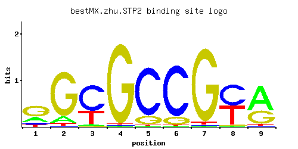

STP2
YHR006W
Transcription factor, activated by proteolytic processing in response to signals from the SPS sensor system for external amino acids; activates transcription of amino acid permease genes
Best-performing DNA-binding model.

View and copy the recommended matrices ↘
A | 0.24 0.11 0.03 0.01 0.01 0.01 0.01 0.01 0.62 C | 0.11 0.01 0.64 0.01 0.83 0.85 0.01 0.52 0.01 G | 0.57 0.83 0.01 0.97 0.15 0.13 0.95 0.01 0.34 T | 0.08 0.05 0.31 0.01 0.01 0.01 0.03 0.46 0.03
A | 24 11 3 1 1 1 1 1 62 C | 11 1 64 1 83 85 1 52 1 G | 56 83 1 97 15 13 95 1 34 T | 8 5 31 1 1 1 3 46 3
A | -0.29 -1.07 -2.37 -3.47 -3.47 -3.47 -3.47 -3.47 0.66 C | -0.49 -2.89 1.27 -2.89 1.53 1.55 -2.89 1.06 -2.89 G | 1.15 1.53 -2.89 1.68 -0.18 -0.33 1.66 -2.89 0.64 T | -1.39 -1.86 -0.03 -3.47 -3.47 -3.47 -2.37 0.36 -2.37
Alternative candidate matrices 2
Historical matrix candidates from the original ScerTF database. Expand a source to inspect its original logo, scores, and matrix values.
STP2Foat et. al.P = 1View matrix ↘
STP2Zhao and StormoP = 0.8213View matrix ↘
Gene-level annotations and interactions.
Genes bound in ChIP-chip experiments 61 genes
YBR040W, YBR081C, YBR130C, YBR131W, YBR195C, YBR291C, YCL024W, YCL025C, YCL065W, YCL066W, YCL067C, YCR039C, YCR040W, YCR041W, YDL041W, YDL043C, YDR048C, YDR064W, YDR065W, YDR098C, YDR102C, YDR103W, YDR215C, YDR216W, YDR383C, YFL002W-A, YFL002W-B, YFL017C, YGR024C, YGR025W, YGR026W, YGR091W, YGR199W, YGR205W, YHR125W, YHR173C, YHR174W, YJL024C, YJR052W, YJR055W, YKR074W, YLR003C, YLR143W, YLR303W, YLR334C, YLR374C, YLR379W, YLR397C, YML039W, YML040W, YML058C-A, YML069W, YNL070W, YNR009W, YOL077W-A, YOL078W, YOL079W, YOL080C, YOR192C-A, YOR192C-B, YPL266W
Genes affected by TF deletion 64 genes
YHR146W, YPL177C, YGL038C, YPL016W, YBR067C, YBR129C, YFR006W, YNL180C, YBL058W, YER029C, YDR078C, YOR229W, YBR167C, YFR044C, YLR100W, YLR438C-A, YOR043W, YDR077W, YMR023C, YNR066C, YJR148W, YLR099C, YLR101C, YOR074C, YBR265W, YGR220C, YNR035C, YPL092W, YGR012W, YIR010W, YER064C, YGR219W, YKL150W, YMR295C, YGL062W, YHR006W, YKR093W, YNL065W, YKL096W, YNL289W, YPL062W, YDR019C, YLR231C, YLR294C, YNL098C, YAR018C, YER008C, YGR108W, YGR165W, YJL167W, YMR272C, YDR174W, YCL031C, YPL163C, YAL062W, YHR200W, YMR038C, YBR244W, YHR137W, YLR049C, YDL029W, YOR375C, YHR049C-A, YIL041W
Predicted TF–TF partners 5 genes
MIG1, MIG3, NHP10, RSF2, SUT1